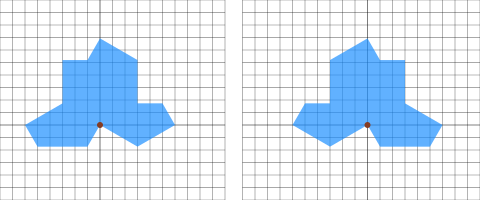
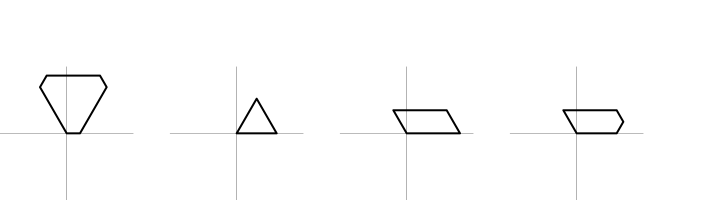
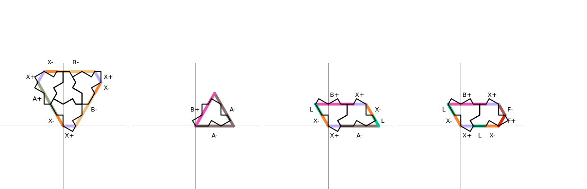
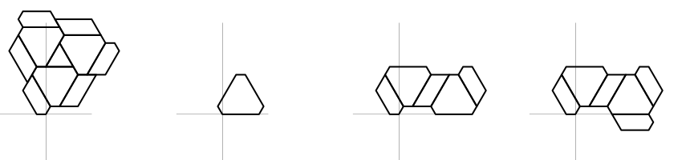
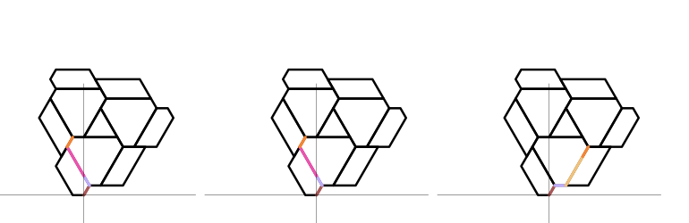
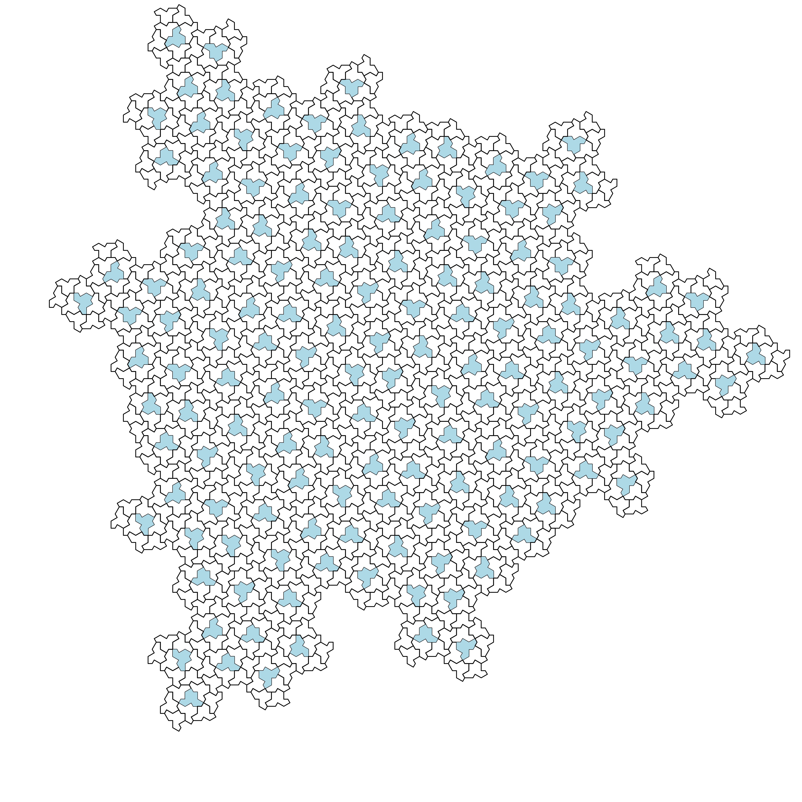

Note: This blogpost is heavily inspired from this wolfram community article.
Whether a single geometrical shape exists that can tile plane
aperiodically was open problem until recently. Since discovery of hat
and related shapes we know answer is affirmative. In this blog we will
draw tiling of plane using hat and its reflection. Hat is a ploykite
with 13 components, 3 different edge lengths
and interior angles multiples of 30 degree. Using metapict
library, let’s draw canonical hat and its reflection.
#lang racket
(require metapict)
(struct H-edge (turn) #:transparent)
(struct T1 H-edge () #:transparent)
(struct T2 H-edge () #:transparent)
(struct T3 H-edge () #:transparent)
(define hat
(list (T1 -1) (T1 1) (T2 4) (T2 6) (T1 3)
(T1 5) (T2 8) (T2 6) (T1 9) (T1 7)
(T2 10) (T3 12) (T2 14)))
(define flipped-hat
(list (T2 -2) (T3 0) (T2 2)
(T1 5) (T1 3) (T2 6) (T2 4) (T1 7)
(T1 9) (T2 6) (T2 8) (T1 11) (T1 1)))
(define (H-edge-length e)
(cond
[(T1? e) (sqrt 12)]
[(T2? e) 2]
[(T3? e) 4]))
(define (scan init fn lst)
(if (null? lst)
(list init)
(cons init
(scan (fn init (first lst)) fn (rest lst)))))
(define (H-edges->curve origo turn edges)
(let ([points (scan origo pt+
(map (lambda (e)
(pt@d (H-edge-length e)
(* 30 (+ turn (H-edge-turn e)))))
edges))])
(apply make-curve (append
(apply append (map (lambda (p) (list p --))
(drop-right points 1)))
(list cycle)))))
(with-window (window -7 7 -7 7) (draw (H-edges->curve (pt 0 0) 0 hat)))
(with-window (window -7 7 -7 7) (draw (H-edges->curve (pt 0 0) 0 flipped-hat)))When above code is run, it will draw shapes shown below minus grid and interior being colored blue.

Larger and larger area of plane can be tiled using substitution
tiling. In case of hat tiling, substitution is given in terms of
metatiles H, T, P and
F. Let’s look at them and code used to draw them.

(struct M-edge (turn) #:transparent)
(struct X+ M-edge () #:transparent)
(struct X- M-edge () #:transparent)
(struct A+ M-edge () #:transparent)
(struct A- M-edge () #:transparent)
(struct B+ M-edge () #:transparent)
(struct B- M-edge () #:transparent)
(struct F+ M-edge () #:transparent)
(struct F- M-edge () #:transparent)
(struct L M-edge () #:transparent)
(define meta-H
(list (X+ 0)
(B- 1) (X- 1)
(X+ 2)
(B- 3) (X- 3)
(X+ 4)
(A+ 5) (X- 5)))
(define meta-T
(list (A- 0)
(A- 2)
(B+ 4)))
(define meta-P
(list (X+ 0) (A- 0)
( L 2) (X- 2)
(X+ 3) (B+ 3)
( L 5) (X- 5)))
(define meta-F
(list (X+ 0) (L 0) (X- 0)
(F+ 1)
(F- 2)
(X+ 3) (B+ 3)
( L 5) (X- 5)))
(define (M-edge-length e)
(cond
[(or (A+? e) (A-? e) (B+? e) (B-? e)) 12]
[else 4]))
(define (M-edges->curve origo turn edges)
(let ([points (scan origo pt+
(map (lambda (e)
(pt@d (M-edge-length e)
(* 60 (+ turn (M-edge-turn e)))))
edges))])
(apply make-curve (append
(apply append (map (lambda (p) (list p --))
(drop-right points 1)))
(list cycle)))))
(with-window (window -20 20 -20 20) (draw (M-edges->curve (pt 0 0) 0 meta-H)))
(with-window (window -20 20 -20 20) (draw (M-edges->curve (pt 0 0) 0 meta-T)))
(with-window (window -20 20 -20 20) (draw (M-edges->curve (pt 0 0) 0 meta-P)))
(with-window (window -20 20 -20 20) (draw (M-edges->curve (pt 0 0) 0 meta-F)))Notice that there is mismatch in number between edges in picture and
code. Also there are two variants, positive and negative, of edge types
(X+, X- etc) except L. Why such
oddities will be clear when one looks how hats are projected into these
metatiles.

Edges of metatiles are deconstructed into parts and type and
attribute (positive or negative) are given to them. Positive or negative
label depends on whether parts of hats are bulging out or deflating in
around metatile edges. Substitution rule should line up A+
and A-, B+ and B-,
X+ and X- so on. This is required so that no
gap remains in tiling. Next let’s look at substitution rules of metatile
H, T, P and F
respectively.

Since projection of hats in metatiles is not invariant under rotation
but 3 metatiles are, substitution rule should also specify
orientation of metatiles. In our case this orientation is specified by
local origin of metatile.
Up until now all our drawing is done at origin (pt 0 0)
without rotation even though our methods H-edges->curve
and M-edges->curve can account for translation and
rotation. To expand metatiles using substitution rule we will require
translation and rotation. We wrap our canonical drawing of metatiles in
p-meta structure which includes rotation turn
and translation dist. Translation is not given as single
vector but list of vectors each of which is given in terms of metatile
edges M-edge. Idea is if we travel along these edges from
origin we arrive at point which is local origin of wrapped metatile.
Also notice that attributes (+ / -) of
M-edge does n’t matter in translation vector as
+ and - of same type are always lined up.
Replacing X+ with X- (or any other such
pairing) or vice versa makes no difference.
(struct p-meta
(meta turn dist) #:transparent)
(define meta-H~>
(list (p-meta meta-H 0 (list (F- 1) (X+ 2) (B+ 2) (X- 1)))
(p-meta meta-H -2 (list (F- 1) (X+ 2) (B+ 2) (X- 1)))
(p-meta meta-H 0 (list (F- 1) (X+ 0) (B- 1) (X- 1)))
(p-meta meta-T 0 (list (F- 1) (X+ 2) (B+ 2) (X- 1)
(X+ 0)))
(p-meta meta-F -1 (list (F- 3) (X+ 2) (L 2) (X- 2)))
(p-meta meta-F 1 (list (F- 1) (X+ 0) (B- 1) (X- 1)
(X+ 0) (L 0) (X- 0)))
(p-meta meta-F 3 (list (F- 1) (X+ 2) (B+ 2) (X- 1)
(X+ 0) (B- 1) (X- 1) (X+ 2)
(L 2) (X- 2)))
(p-meta meta-P 2 (list (F- 1) (X+ 2) (B+ 2) (X- 1)))
(p-meta meta-P 1 (list (F- 1) (X+ 0) (L 0) (X- 0)))
(p-meta meta-P 3 (list (F- 1) (X+ 0) (B- 1) (X- 1)
(X+ 0) (B- 1) (X- 1) (X+ 2)
(L 2) (X- 2)))))Picture below shows how translation of H metatiles are
calculated using M-edges. Notice that first and second
H metatile has same local origin. Second H
metatile (bottom one) is rotated by 120 degree clockwise
(-2 * 60).

We now need to write substitute-many so that we can call
it successively to get bigger and bigger substitution. To achieve this
we need substitution rules for M-edges for fixing
dist which is given by M-edge-reps.
(define (M-edge-reps e)
(let ([turn (M-edge-turn e)])
(cond
[(A-? e) (list (B- turn) (X- turn) (X+ (+ turn 1)))]
[(A+? e) (list (X- (+ turn 1)) (X+ turn) (B+ turn))]
[(B-? e) (list (X- (+ turn 1)) (X+ turn) (A- turn))]
[(B+? e) (list (A+ turn) (X- turn) (X+ (+ turn 1)))]
[(F-? e) (list (X+ turn) (L turn) (X- turn) (F+ (+ turn 1)))]
[(F+? e) (list (F- (+ turn 1)) (X+ turn) (L turn) (X- turn))]
[(L? e) (list (L (- turn 1)))]
[(X-? e) (list (X- (- turn 1)) (X+ turn) (L turn) (X- turn) (F+ (+ turn 1)))]
[(X+? e) (list (F- (+ turn 1)) (X+ turn) (L turn) (X- turn) (X+ (- turn 1)))])))
(define (turn-M-edge e t)
(cond
[(A-? e) (A- (+ t (M-edge-turn e)))]
[(A+? e) (A+ (+ t (M-edge-turn e)))]
[(B-? e) (B- (+ t (M-edge-turn e)))]
[(B+? e) (B+ (+ t (M-edge-turn e)))]
[(F-? e) (F- (+ t (M-edge-turn e)))]
[(F+? e) (F+ (+ t (M-edge-turn e)))]
[( L? e) ( L (+ t (M-edge-turn e)))]
[(X-? e) (X- (+ t (M-edge-turn e)))]
[(X+? e) (X+ (+ t (M-edge-turn e)))]))
(define (substitute pm)
(let ([o-turn (p-meta-turn pm)]
[o-dist (p-meta-dist pm)]
[o-meta (p-meta-meta pm)])
(map
(lambda (p) (struct-copy p-meta p
[turn (+ o-turn (p-meta-turn p))]
[dist (append (apply append (map M-edge-reps o-dist))
(map (lambda (e) (turn-M-edge e o-turn))
(p-meta-dist p)))]))
(cond
[(eq? o-meta meta-H) meta-H~>]
[(eq? o-meta meta-T) meta-T~>]
[(eq? o-meta meta-P) meta-P~>]
[(eq? o-meta meta-F) meta-F~>]))))
(define (substitute-many p-metatiles)
(apply append (map substitute p-metatiles)))We have all machinery ready for hat tiling. Code is listed here which also includes functions to project hats into metatiles, which is not covered here.
